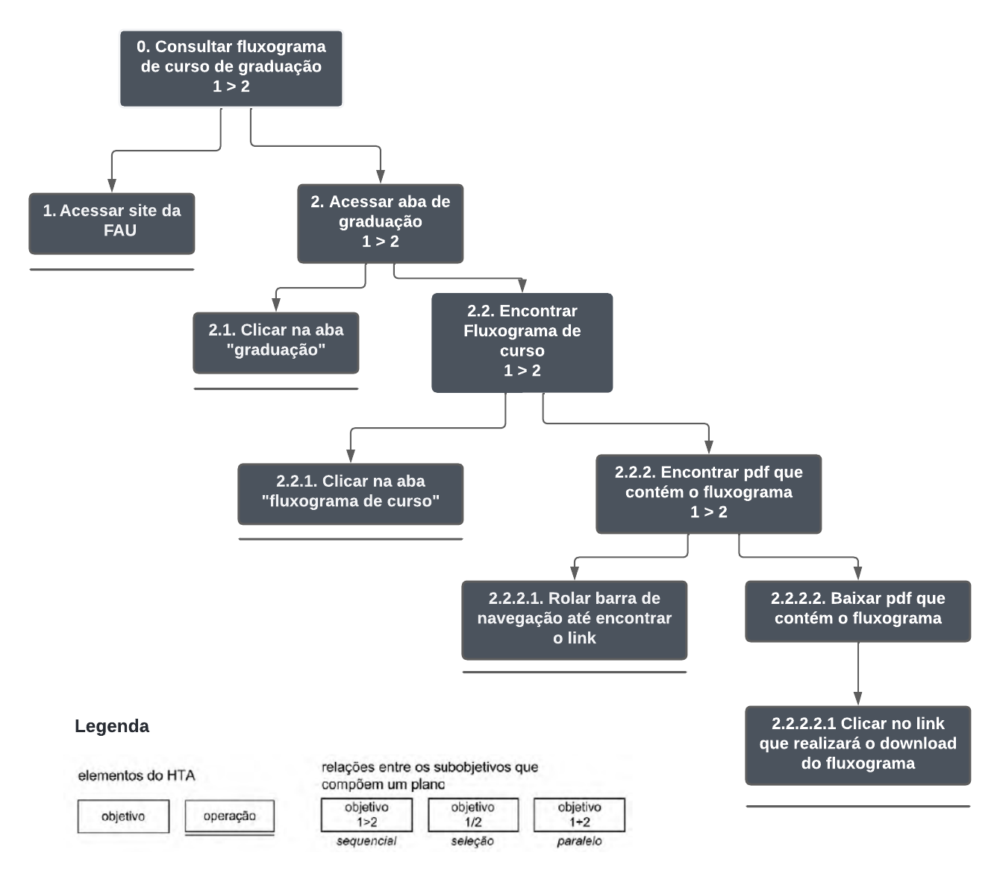
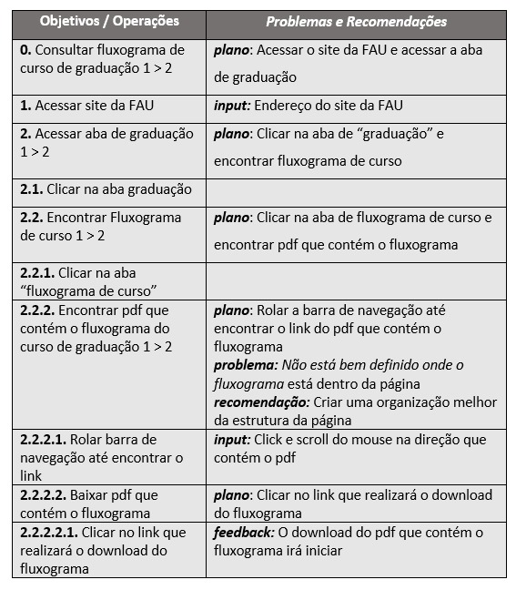

Análise de Tarefas
Histórico de Versões
| Data | Versão | Descrição | Autor(es/as) | Revisor |
|---|---|---|---|---|
| 14/07/2022 | 0.1 | Criação do Documento | Mateus Franco | Caio César |
| 19/07/2022 | 0.2 | Inserção dos diagrama e tabela | Mateus Franco | Caio César |
| 29/07/2022 | 0.3 | Adição e padronização de fontes nas figuras e correção de links | Thalisson Alves | Letícia Aires |
1. Introdução
Uma tarefa é qualquer parte do trabalho que precisa ser realizada e pode ser definida em termo de seus objetivos. A análise de tarefas é baseada na psicologia funcional e é importante para se ter um entendimento dos objetivos que os usuários desejam ou precisam atingir, como eles realizam as tarefas em busca desses objetivos e o por quê.
Como o objetivo principal é a avaliação de um sistema computacional já existente, a análise de tarefas será realizada através do método de Análise Hierárquica de Tarefas. Tal método foi escolhido para a análise, pois ela facilita a ilustração de tarefas do sistema, separando-as em objetivos, subobjetivos e operações e os relacionando de diferentes maneiras em relação a como as tarefas devem ser executadas pelo usuário.
2. Passos para a realização da Análise de Tarefas
-
Realiza-se a coleta de um conjunto de objetivos, definidos em termos psicológicos, ou seja, os objetivos das pessoas.
-
Para cada objetivo definido anteriormente, elabora-se uma lista das ações realizadas por um agente para alcançar esse objetivo (caso haja mais de um agente, é recomendado representar as ações de cada agente em colunas diferentes).
-
Verifique a validade da decomposição junto aos stakeholders.
3. Análise Hierárquica de Tarefas
A Análise Hierárquica de Tarefas examina primeiramente os objetivos de alto nível, decompondo-os em subobjetivos buscando identificar quais subobjetivos são mais difíceis de atingir (ou que geram mais erros) e que, portanto, limitam ou mesmo impedem o atingimento do objetivo maior. Os subobjetivos de um objetivo e as relações entre eles é denominada de plano. Um plano define os subobjetivos necessários para alcançar um outro objetivo maior, e a ordem em que esses subobjetivos devem ser alcançados.
3.1. Representação gráfica para consulta de fluxograma de graduação
A tarefa "Consultar fluxograma de graduação" é uma das principais tarefas realizadas dentro do sítio da Faculdade de Arquitetura e Urbanismo. É a tarefa que permite que o graduando tenha acesso às disciplinas que contém o curso de graduação e que são obrigatórias para a conclusão do curso. Abaixo, representado pela Figura 1 está analisando graficamente quais são os objetivos e os passos necessários para que tal objetivos seja concluído com êxito por parte do usuário.

Figura 1: Diagrama para Análise Hierárquica de Tarefas para consulta de fluxograma de graduação.
Fonte: autores
3.2. Representação em tabela para consulta de fluxograma de graduação
Abaixo, na Figura 2, temos a representação em tabela equivalente ao diagrama apresentado na Figura 1 acima. Uma ação pode ser entendida como uma instrução para fazer algo sob certas circunstâncias, o input como estados e o feedback como testes ou avaliação do estado final.

Figura 2: Tabela equivalente ao diagrama para Análise Hierárquica de Tarefas para consulta de fluxograma de graduação.
Fonte: autores
4. Referências
BARBOSA, Simone; SILVA, Bruno. Interação Humano-Computador. 1ª Edição. Elsevier, 2010.
Annett, J. (2003) “Hierarchical Tasks Analysis”. In: Hollnagel (ed.) Handbook of Cognitive Task Design.